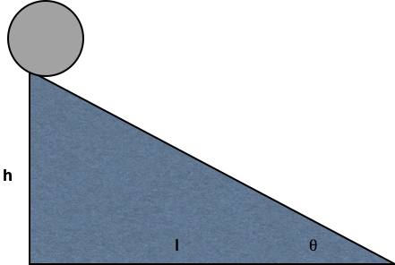
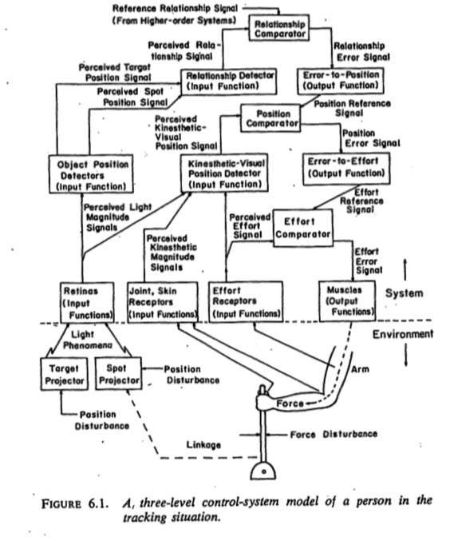

Out of Control
Rick Gilmore
2019-11-13 12:50:51
Preliminaries
Support


Agenda
- Psychology is harder than physics
- But why?
- What to do?
Psychology is harder than physics


But why?
Beer 2003

| Realm | Domain |
|---|---|
| \(W\) | The world |
| \(B\) | The body |
| \(N\) | The nervous system |
| \(M\) | The mind |
Nested causality
- Mind (\(M\)) within nervous system (\(N\))
- Nervous system (\(N\)) within body (\(B\))
- Body (\(B\)) within world (\(W\))
Mutual coupling of dynamic states
\(\dot{M} = f(M,N)\)
\(\dot{N} = f(N,B)\)
\(\dot{B} = f(B,N,W)\)
\(\dot{W} = f(W,B)\)
Measure…
- \(W\), \(B\), \(N\) directly
- At varied spatial & temporal scales

Sejnowski et al. 2014
but measure…
- \(M\) indirectly
- Only via \(N\), \(B\)
\(M\) highly salient, but…


Wikipedia

“…psychologists tend to treat other peoples’ theories like toothbrushes;”
“no self-respecting individual wants to use anyone else’s.”
"The toothbrush culture undermines the building of a genuinely cumulative science, encouraging more parallel play and solo game playing…
“rather than building on each other’s directly relevant best work.”
The ‘Rumsfeldian’ space of knowledge

| known-knowns | known-unknowns |
| unknown-knowns | unknown-unknowns |
| known-knowns | known-unknowns |
| unknown-knowns | unknown-unknowns |
“Reports that say that something hasn’t happened are always interesting to me…”
“because as we know, there are known knowns; there are things we know we know.”
“We also know there are known unknowns; that is to say we know there are some things we do not know.”
“But there are also unknown unknowns—the ones we don’t know we don’t know.”
“And…it is the latter category that tend to be the difficult ones.”
What are psychology’s unknown-knowns?
Back to the Future

- Warren McCulloch
- Norbert Wiener
- W. Ross Ashby
- Claude Shannon
- John Von Neumann
- Duncan Luce
- Margaret Mead
- Gregory Bateson`
- Self-regulating and teleological mechanisms
- Simulated neural networks emulating the calculus of propositional logic
- Anthropology and how computers might learn how to learn
- Object perception’s feedback mechanisms
- Analog vs. digital approaches to psychological models
- Are the number of neurons and their connections sufficient to account for human capacities?
- Studies on the activity of the brain
- Meaning in language and how it’s acquired
“How should an experimenter proceed when faced with a black box?”
Ashby, 1956/2015, 6/2
“What properties of the Box’s contents are discoverable and what are fundamentally not discoverable?”
Ashby, 1956/2015, 6/2
“What methods should be used if the Box is to be investigated efficiently?”
Ashby, 1956/2015, 6/2
“The primary data of any investigation of a Black Box consists of a sequence of values of the vector with two components: (input state, output state).”
Ashby, 1956/2015, 6/2
“From this there follows the fundamental deduction that all fundamental knowledge obtainable from a Black Box…”
Ashby, 1956/2015, 6/2
“…is such as can be obtained by re-coding the protocol [sequence of input/output measurements].”
Ashby, 1956/2015, 6/2
“The theory of the Black Box is simply the study of the relations between the experimenter and his environment, when special attention is given to the flow of information.”
Ashby, 1956/2015, 6/2

Wikipedia
| component | interpretation |
|---|---|
| \(x(.)\) | state vector |
| \(x(.)\) | output vector |
| \(u(.)\) | control vector |
\[\dot{\mathbf{x}}=A(t)\mathbf{x(t)}+B(t)\mathbf{u(t)}\]
\[\mathbf{y(t)}=C(t)\mathbf{y(t)}+D(t)\mathbf{u(t)}\]
Dynamical systems are everywhere
| equation | description |
|---|---|
| \(\dot{x}=\sigma dW\) | stochastic variability |
| \(\ddot{x}=\beta x\) | oscillatory |
| \(\dot{x}=\alpha x(1-\frac{x}{k})\) | growth |
| \(\dot{x}=\alpha + \beta x - x^3\) | step-wise change |
Nilam Ram
- What are the relevant state space variables?
- What is being controlled?


Kim 2009


Fajen & Warren 2007


Korentis 2016


| perceptual variable | information provided |
|---|---|
| radial optic flow | forward/backward translation |
| rotational optic flow | rotation around optic axis |
| linear optic flow | eye/head/body rotation/translation |
| perceptual variable | information provided |
|---|---|
| utricle/saccule activity | linear translation/acceleration |
| semicircular canal activity | head/body rotation |
| kinesthetic information | head/body translation/rotation |


Perceptual Control Theory (PCT)

William T. Powers


Tenets of PCT
- Perception is the source of controlled variables
- Actions control perception with respect to some referent signal
- Nested hierarchies of perceptual control systems

Related approaches
- Reafference, Helmholtzian ‘unconscious inference’
- Ecological Psychology (e.g., Gibson, Turvey)
- Forward models/predictive control (e.g., Shadmehr & Mussa-Ivaldi; Wolpert)
- Embodied cognition
- Dynamic Systems Theory (DST) (Van Gelder; Thelen & Smith; Beer; Warren)
Challenges
- Beyond the periphery (perception and action)
- Do peripheral dynamics inform central ones?
- Beyond qualitative dynamics
- How to characterize & measure the relevant state spaces
| Realm | State spaces | Description |
|---|---|---|
| \(W\) | \(\Phi\) | Physical environment |
| \(\Psi\) | Psychological environment | |
| \(B\) | \(J\) | Joint/body position |
| \(P\) | Physiological state | |
| \(N\) | \(n\), \(s\) | Neuronal activity, synaptic connectome |
| \(M\) |
- And the relations among them, e.g. \(W \rightarrow B \rightarrow N \leftrightarrow M\)
- With sufficient precision and specificity
- Across relevant spatial and temporal scales
Sejnowski et al. 2014
- Reconciling explanatory dialects
\[\dot{\mathbf{x}}=A(t)\mathbf{x}(t)+B(t)\mathbf{u}(t)\]
\[\mathbf{y(t)}=C(t)\mathbf{y}(t)+D(t)\mathbf{u}(t)\]
Algorithms vs. Dynamics
- Van Gelder, 1995
- How to regulate the speed of a steam engine?

Watt steam engine
1. Measure the speed of the flywheel.
2. Compare the actual speed against the desired speed.
3. If there is no discrepancy, return to step 1. Otherwise,
a. measure the current steam pressure;
b. calculate the desired alteration in steam pressure;
c. calculate the necessary throttle valve adjustment.
4. Make the throttle valve adjustment.
5. Return to step 1. 
Why cybernetics, especially PCT?
- Reconciles ecological and computational approaches
- Hierarchical/nested control systems commonplace
- Plausible mechanism for development
- More transparent mapping onto physical substrates
- Scheme for visualizing sequential processes

- Changing zeitgeist?


Krakauer et al. 2017
However…

“As with any feed- back system, it can be very difficult to disentangle cause and effect. Effects ‘play through the system’ to become causes.”
“…we may need to modify our expectations regarding the demands we can reasonably place upon a componential explanation…”
“stemming from the simple fact that the agent and its environment are really just two components of a single larger system.”
“there are clearly many challenges facing a dynamical approach to cognition…it is still quite impossible to fully visualize or characterize its complete 16-dimensional dynamics.”
“There is no question that the patterns of activity of the interneurons play a key role in the operation of the agent analyzed here, but is this role best understood as a representational one?”
Getting there from here
“In response to a question about the relevance of thinking of the brain as a complex dynamical system…”
“the philosopher of mind Patricia Churchland once replied ‘It’s obviously true, but so what? Then what is your research program?’”
Lewin 1992 in Beer 2003
- Deep and complete computational theories of tasks
- Amenable to control theory analyses
- Multiple measures of state spaces, dense in time
- More attention to ‘unknown-knowns’
- Better ways to communicate our ‘known-knowns’ & ‘known-unknowns’
We don’t have to share toothbrushes…
- But we can share our data, our code, our materials, and our procedures
- In Findable, Accessible, Interoperable, and Reproducible ways (Wilkinson et al. 2016)
Make knowable unknowns
What behaviors are most commonly measured in child development research?
What is the developmental trajectory of sensitivity to motion?
(Hadad et al., 2015)

Hadad et al. 2015 Table 1
Imagine if…
All of the prior studies that used the X paradigm were openly shared in formats you could use to calculate a priori distributions for your variables of interest.
The display code used for a study you wanted to replicate was readily available so you could verify the parameters used and make decisions for your planned replication.


Take homes
- Psychology is a really hard science
- Multiple, hierarchically nested and circular control systems are required
- Cybernetic approaches can help illuminate them
- A commitment to transparency, openness, and sharing will accelerate understanding
https://psu-psychology.github.io/cog-bbag-2019-2020/2019-11-13-gilmore.html/
This talk was produced on 2019-11-13 in RStudio version using R Markdown and the reveal.JS framework. The code and materials used to generate the slides may be found at https://psu-psychology.github.io/cog-bbag-2019-2020/2019-11-13-gilmore.html/.
Information about the R Session that produced the code is as follows:
## R version 3.5.3 (2019-03-11)
## Platform: x86_64-apple-darwin15.6.0 (64-bit)
## Running under: macOS Mojave 10.14.6
##
## Matrix products: default
## BLAS: /Library/Frameworks/R.framework/Versions/3.5/Resources/lib/libRblas.0.dylib
## LAPACK: /Library/Frameworks/R.framework/Versions/3.5/Resources/lib/libRlapack.dylib
##
## locale:
## [1] en_US.UTF-8/en_US.UTF-8/en_US.UTF-8/C/en_US.UTF-8/en_US.UTF-8
##
## attached base packages:
## [1] stats graphics grDevices utils datasets methods base
##
## loaded via a namespace (and not attached):
## [1] compiler_3.5.3 magrittr_1.5 tools_3.5.3 htmltools_0.3.6
## [5] revealjs_0.9 yaml_2.2.0 Rcpp_1.0.1 stringi_1.4.3
## [9] rmarkdown_1.13 highr_0.8 jpeg_0.1-8 knitr_1.23
## [13] stringr_1.4.0 xfun_0.8 digest_0.6.19 evaluate_0.14